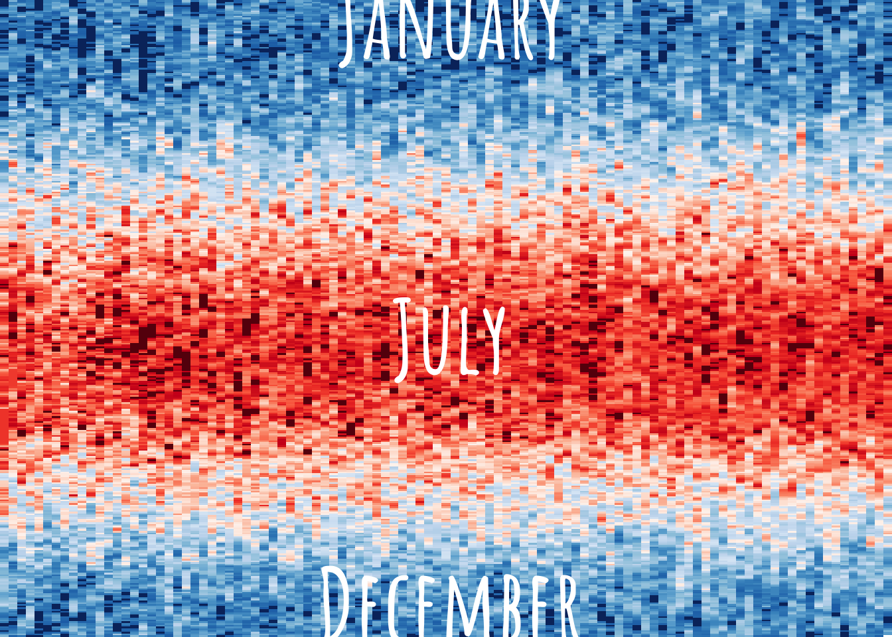
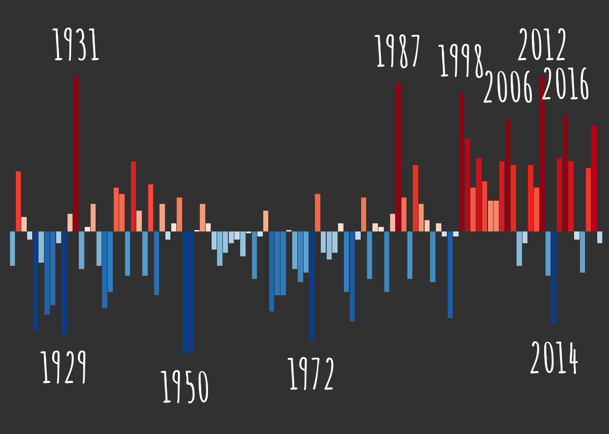

Tempestry aRt
This script produces a climate art! It is inspired by the Tempestry Project and warming stripes.
It will help you make a poster showing about 100 years of temperature data for various places. You’ll get the annual trend along with 365 days of daily temperature for each year! For some places, you can also add other weather data (e.g. over a century of data on when Lake Superior’s ice road to Madeline Island is open)!
Since this is art, there are some small creative liberties taken (i.e., filling in of missing data, usage of different color breaks based on what looks good, using multiple NOAA weather stations which aren’t aligned with their dates of records, etc.). Also, since this is art, many details and data best practices are intentionally left out (i.e., you won’t find a figure legend here!). The data is roughly at the county level, but modifications to different geographies should be possible!
Once you make your poster art, I have had good luck printing at FedEx. Cost of $17.25 for a poster print (matte paper, vertical orientation, size 16x20). But feel free to figure out what works for you (more convenient location/store, maybe you have a bigger or smaller picture frame already on hand that you’d like to use, maybe you want a fancier option like a foam board backing, etc.).
Creating your poster
Set-up
You will need to use an API key to connect to the NOAA database. Request an API key here, then add the key to your .Renviron file. Enter in the console usethis::edit_r_environ() and type NOAA_KEY="KEY GOES HERE, INSIDE QUOTES". Save and close the .Renviron file, and restart R.
Daily temperatures
Fetch station data
The daily temperatures are fetched from stations within a certain distance from a given latitude and longitude (i.e., your home or another sentimental place). Sometimes the distance radius needs to be increased if stations are sparse, and other times the specific latitude and longitude might need to be adjusted to get what you want. Basically, this is part of the art - figure out what looks good.
As an FYI, fetching station data does take a while. The very first time this code is run, you’ll get stations names for all NOAA stations in the US (that takes a while, but only needs to happen once). Whenever you change the location for which you’d like to get data, it’ll also take a while to run.
Sometimes the closest stations to the site need to be adjusted. A couple tips: 1) The maximum number of stations to fetch data from is capped at 15. You may want to increase or decrease this number (edit the limit call). 2) The stations can have different data availability, but generally it seems like longer-term stations are more ideal for the art. Still, you might need to adjust (edit the year_min and year_max calls).
3) The code will attempt to fetch data through the most recently completed year, but you may need to write over your data cache to start displaying the most up-to-date data.
Decide what years to use
This is a balance! You probably want as many years of data as possible, but some of the early records are spotty or missing. Some steps are designed to deal with small missing data records, but you still need to figure out a good starting year. The code below gets you to a good estimate of what year to start at, but you may need to revisit it once you see what the plots look like.
This min_year is a global parameter, which is passed to the processing and plotting for both the daily and annual temperatures. So if (when) this parameter is adjusted, all code chunks below this also should be re-run (and subsequently styled). You’ll know an adjustment to the min_year is needed if you see long “streaks” of the same daily temperatures.
Make daily plot
You will probably be reprocessing this piece several times to make it look nice. The daily average temperatures get mapped (#aesthetics), so just know that going into any manual adjustments you may be making.
Tips:
- Starting points for the temperature thresholds have been populated, but tweak as needed. Looking at the count of entries in each category can also be helpful (roughly even split between hot/cold, and even but less than !1000 in the extreme categories).
- You’ll probably end up trimming the dates included (i.e., starting the plots at a later date than the earliest potential date), which will mess with the starting point color scheme.
- Finally, you might have other aesthetic preferences! Establishing a consistent color scheme across multiple locations? Have a predefined parameter for extreme hot or cold temperatures?
# A tibble: 4 × 2
temp_category n
<fct> <int>
1 extreme cold 1090
2 cold 17565
3 hot 18099
4 extreme hot 943
Annual average temperatures
Fetch annual data
Manually download county-level average temperatures from NOAA. Annual averages are calculated using some fancy models (weighting station data by area, quality control algorithms, etc.). Save this file in the data-raw folder.
Plot annual data
The annual data is shown as deviations from the mean of all year’s average temperature. Here too, the years which end up being included matter. So if/when the min_year parameter is adjusted above, this needs to get re-run.
The extreme years are labeled, but you may be adjusting the year threshold. You also may be needing to remove labels and nudge them up or down depending on what the data looks like.
# A tibble: 4 × 2
temp_category n
<fct> <int>
1 extreme cold 6
2 cold 48
3 hot 43
4 extreme hot 6# A tibble: 103 × 6
Date temp longterm_avg temp_anomaly temp_category color
<dbl> <dbl> <dbl> <dbl> <fct> <chr>
1 1950 40.4 44.2 -3.75 extreme cold #08519C
2 1951 40.5 44.2 -3.65 extreme cold #08519C
3 1972 40.8 44.2 -3.35 extreme cold #08519C
4 1929 41 44.2 -3.15 extreme cold #08519C
5 1924 41.1 44.2 -3.05 extreme cold #08519C
6 2014 41.3 44.2 -2.85 extreme cold #08519C
7 1979 41.4 44.2 -2.75 cold #2171B5
8 1996 41.5 44.2 -2.65 cold #2474B6
9 1926 41.6 44.2 -2.55 cold #2878B8
10 1965 41.7 44.2 -2.45 cold #2B7BBA
# … with 93 more rows